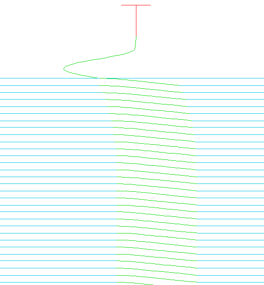
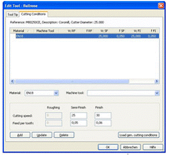

|

Bileþik eþ yükseltili iþleme:
Dik yerleri eþ yükseltili, pasolarýn aralarýnýn açýldýðý ve kaliteli yüzey elde edilemeyen yatay veya yatay yakýn yerleri sabit adýmlý iþlemeye olanak veren bir iþleme biçimi tasarlanmaktadýr. Bu yeni özellik eþ yükseltili pasolarýn, pasolar sayfasýnda bileþik temizleme ve bileþik adýmlama parametreleri ile kontrol edilmektedir.
Proje deðiþkenleri:
Artýk bir proje içinde deðiþkenler tanýmlamak ve bu deðiþkenleri iþlemlerde referans olarak kullanmak mümkündür. Bir tutucu koruma mesafesini deðiþken olarak tanýmlamak ve var olan sabit deðerin yerine kullanmak en basit örnek olacaktýr. Deðiþken sayesinde ayný deðer doðru olarak her iþlemde kullanýlýr. Bir makronun kullanýldýðý yerde deðiþkenler deðiþtirilebilir ve yeni deðer tüm iþlemlerde kullanýlýr.
Takým kütüphaneleri / Veri bankasý:
Takým kütüphaneleri Machining STRATEGIST' i destekleyecek, bir teknoloji veri bankasý gibi çalýþacak biçimde geliþtirilmiþtir. Ýlk deðiþiklik proje ayarlarýnda görünmektedir. Proje için varsayýlan takým kütüphanesi, makine takýmý ve parça malzemesini atamanýzý saðlayan ayarlar eklenmiþtir. Kütüphane içinde sadece takým ve takým tutucu bilgileri deðil ayný zamanda Machining STRATEGIST içinde kullanýlan tüm devir ve ilerleme deðerleri de saklanmaktadýr. Her takým kaba, ara kaba ve temizleme iþlemleri için ayrý devir ve hýz bilgileri ihtiva edebilir. Takým kütüphanesi düzenleyicisi kolay ve hýzlý takým ve tutucu tanýmlamak ve kullanmak için geliþtirilmiþtir. Takým kütüphanesi sayesinde Machining STRATEGIST içinde kullanýlan hemen hemen tüm deðiþkenlerin atanmasý otomatikleþtirilmiþtir. Takým kütüphanesi iç içe alakalý birçok takýmý içeren ver bankasý yaratmanýzý saðlamaktadýr. Kütüphane içinde barýndýrýlan sýklýkla kullanýlan bilgiler, makine ayarlarý (devir ve ilerleme hýzlarý), makinede kullanýlan kesme takýmlarý (ve magazin yerleri), parça ve takým malzeme bilgileri saklanmaktadýr.
Örneðin, bir VMC makine üzerinde P20 çelik malzeme keserken makine ile iliþkilendirilmiþ tanýmlý takýmlarý kullanarak, takým, malzeme ve makine bilgilerinden elde edilen her iþlem ile alakalý özel deðiþkenleri kural olarak belirlenebilir. Bir kere firma kullanýcýlarý standartlarý belirlendikten sonra bu standartlara kural atanabilir ve her kullanýcý bu kurallara uyan parametreleri sistemin içinde otomatikman atandýðýný görür.

Geliþmiþ takým tanýmlamalarý:
Sürüm 9.0 içinde olasý takým tanýmlamalarý takýmýn sap kýsmýna da konik açý verilebilecek þekilde geliþtirilmiþtir. Bu sayede küçük takýmlarla çalýþýrken saðlamlýðý garanti etmek için belirli bir noktadan sonra açý verilen takýmlarýn tanýmlanmasýnda kolaylýk saðlamaktadýr.
Nokta yaratýmý:
Artýk machining STRATEGIST içinde nokta yaratmak mümkündür. Nokta düzenleyicisi sýnýr düzenleyicisine benzer bir þekilde çalýþmaktadýr. Noktalar yaratýldýktan sonra bir düzenlenebilir sýnýrlar klasörü otomatikman yaratýlýr. Nokta yaratým komutlarý, bir doðrusal dizi, matris dizisi veya dairesel dizi oluþturabilecek þekilde kullanýlabilir. Ek olarak, var olan bir deliðin merkezinde serbest el ile nokta yaratýlabilmektedir. Noktalar kaydedilebilir ve makrolar yardýmý ile yaratýlabilir.
Kütük hesaplamalarý:
Yeni tanýmlanan analiz komutu yardýmýyla, hedef yüzeyler veya kalan kütük modelleri ile belirlenen bir referans yüzey arasýndaki mesafe renk sýðasý yardýmý ile gözlemlenebilmektedir. Bu sayede kullanýcý gerçekleþtirdiði iþlemler ardýndan nerede ne kadar talaþ kaldýðýný bütünü ile görebilmektedir.
Komut, kalan talaþ deðerlerinin nasýl deðiþtiðinin gözlemlenebilmesi amacýyla daha sonra animasyonu gerçekleþtirilebilecek þekilde tasarlanmýþtýr. Fare imlecini yüzeyler üzerinde gezdirildiðinde, o noktadaki kalan talaþ sayýsal olarak gözlemlenebilmektedir.
Ayrýca, kalan kütük ile gerçek yüzeyler arasýndaki fark kalan kütüðün talaþa göre renklendirilmesi ile de gözlemlenebilir. Modelde gerçekleþtirilen yapýsal deðiþiklikler de asýl yüzeyler ile aradaki fark incelenebilir.
Eðrilik daðýlýmý:
Eklenen yeni özellik sayesinde üçgenselleþtirilmiþ yüzeylerin eðrilik daðýlýmý analiz edilebilmektedir. Yüzeyin bir kenarýndaki her nokta, o noktada ve o kenarda yüzeyle mutlak temas halinde olabilecek küre takýma göre renklendirilmektedir. Her yüzey, her kenarýn baðýmsýz olarak renklendirilebilmesine imkân vermek amacý ile çok küçük bir miktar ofsetlenir. Komut, eðriliðin nasýl deðiþtiðinin gözlemlenebilmesi amacýyla daha sonra animasyonu gerçekleþtirilebilecek þekilde tasarlanmýþtýr. Fare imlecini yüzeyler üzerinde gezdirildiðinde, o noktadaki eðrilik sayýsal olarak gözlemlenebilmektedir.
Veri yazdýrma ve kaydetme:
- Raporlar
- Microsoft Internet Explorer 7.0 rapor alma iþlemlerinde desteklenmektedir.
- Kütüphanelerde belirlenen takým ve takým tutucu açýklamalarý arzu edilirse rapora eklenebilmektedir.
- Modelin dört açýdan görünümü rapora yazdýrýlmaktadýr. Her görünüm istenirse büyütülerek ayrýntýlý olarak incelenebilir.
- Makrolar
Ýþletim sistemi:
Windows Vista; Machining Strategist Windows Vista iþletim sistemini desteklemektedir. Ýþletim sisteminin tüm sürümleri de desteklenmektedir.
 Ýrtibat: Ýrtibat:
E-Posta: saggul@nkg.com.tr
Numerik
Kontrol Grup Ltd. Þti.
Gülbahar
Mah. Gayret Sok. No:21 K:2
Gayrettepe / Ýstanbul
Tel : (212) 274 89 42
GSM: (533) 723 23 93
www.nkg.com.tr
|